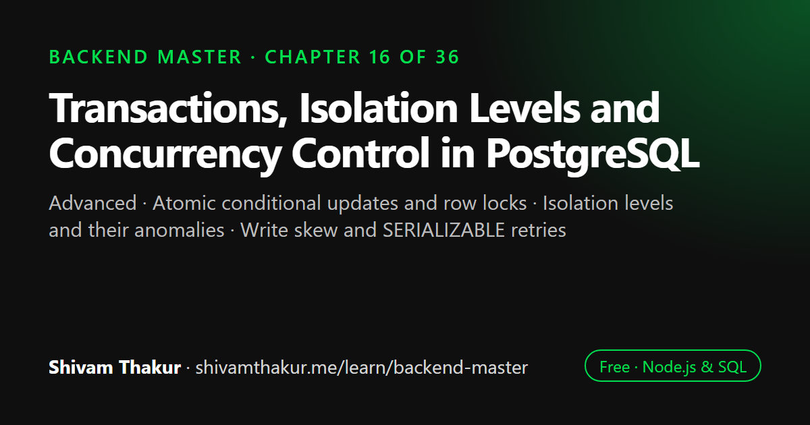

Chapter 16 of 36 · Advanced
Transactions, Isolation Levels and Concurrency Control in PostgreSQL
Transactions, Isolation Levels and Concurrency — When Two Users Act at Once

Concurrency bugs are silent and costly. This chapter runs 50 simultaneous buyers against a 10-item stock to show a naive read-modify-write confirming 50 orders, then fixes it six ways, demonstrates isolation anomalies including write skew, row locks and SKIP LOCKED queues, deadlocks and the correct transaction pattern in Node.js.
In this chapter you will learn
- Atomic conditional updates and row locks
- Isolation levels and their anomalies
- Write skew and SERIALIZABLE retries
- Deadlocks and consistent lock ordering
- A correct withTransaction helper for Node.js
16.0 Why This Chapter Matters
Everything so far worked because one thing happened at a time. Real systems don't work like that. Fifty people click "Buy" on the last pair of sneakers in the same second. Two admins edit the same product. A payment webhook arrives while the user refreshes the page.
Concurrency bugs are the nastiest in backend work because they are:
- Invisible in testing. Your single-user tests pass forever.
- Rare in production, until a sale day. Then they happen hundreds of times.
- Silent. The system doesn't crash; it quietly sells ten items you only have three of, or loses a payment.
In this chapter you will cause these bugs on purpose, with a 50-buyer stampede on a 10-item stock, and then fix them six different ways, measuring each. You'll learn:
- What a transaction guarantees, and what it doesn't.
- The four isolation levels, and what PostgreSQL actually does (with reproducible anomalies, including write skew).
- Row locks:
FOR UPDATE,NOWAIT,SKIP LOCKED(and how to build a job queue with it). - Deadlocks: how they happen, why they can cripple you for seconds, and how to prevent them.
- Optimistic vs pessimistic locking, and when to use which.
- The right way to use transactions from Node.js (and the pool bug that silently breaks them).
- Idempotency and the all-or-nothing checkout for ShopLine.
Everything here ran on PostgreSQL 17 with Node 22 and pg. Outputs are real. Concurrency results can vary slightly run to run (that's the nature of races); the patterns are stable.
16.1 Transactions: The Basics
A transaction is a group of statements that succeed or fail together. (Chapter 12 introduced ACID; here we use it.)
BEGIN;
UPDATE wallets SET balance = balance - 100 WHERE id = 1;
UPDATE wallets SET balance = balance + 100 WHERE id = 2;
COMMIT; -- both changes become visible, atomically
-- or ROLLBACK; -- neither happened- Outside a
BEGIN, every statement is its own tiny transaction (autocommit). - If the server crashes before
COMMIT, none of it happened. AfterCOMMIT, it survives a crash (the WAL; Ch 12). - Other sessions never see half-done work.
What happens when a statement fails inside a transaction
PostgreSQL is strict: after any error, the whole transaction is "aborted" and every later command is refused until you ROLLBACK:
BEGIN;
INSERT INTO sp VALUES (1,'first');
INSERT INTO sp VALUES (2,'x'), (1,'dup'); -- ERROR 23505 duplicate key
INSERT INTO sp VALUES (3,'y'); -- ERROR 25P02:
current transaction is aborted, commands ignored until end of transaction blockIf you want to recover from one failing step and continue, use a savepoint: a named checkpoint inside the transaction.
BEGIN;
INSERT INTO sp VALUES (1,'first');
SAVEPOINT s1;
INSERT INTO sp VALUES (1,'dup'); -- fails (23505)
ROLLBACK TO SAVEPOINT s1; -- undo just that step; the transaction is alive again
INSERT INTO sp VALUES (3,'y');
COMMIT; -- result: rows 1 and 3Real output of that run: rows: 1,3.
MySQL users: PostgreSQL even has transactional DDL (
CREATE TABLE,ALTER TABLEroll back too; Ch 14 relied on it).
What a transaction does not do
A transaction does not automatically make concurrent code correct. This is the number-one misunderstanding. Wrapping "read stock, then write stock" in BEGIN … COMMIT does not stop another transaction from reading the same stock in between. What protects you is the isolation level and locks, which is the rest of this chapter.
16.2 The Stampede: Overselling the Last Items
Setup: a product has 10 in stock. 50 buyers try to buy 1 each, all at once, from Node (a pool of 20 connections). Correct outcome: exactly 10 confirmations, 40 "sold out", final stock 0. A business-rule CHECK (stock >= 0) is on the column.
Each strategy below is real code; the harness fires 50 concurrent buyers using Promise.allSettled. The complete lab is resources/ch16-oversell-lab.mjs.
Strategy 1: The naive read-modify-write
const { rows: [p] } = await pool.query('SELECT stock FROM products WHERE id = 1');
if (p.stock < 1) return false;
await sleep(5); // "business logic": check payment, fraud, etc.
await pool.query('UPDATE products SET stock = $1 WHERE id = 1', [p.stock - 1]);
return true;1 naive read-modify-write confirmed=50 sold_out= 0 errors=0 final_stock=9 297 msWe confirmed 50 orders for 10 items, and the database says 9 are still in stock. Every buyer read stock = 10, every buyer thought it was fine, and every buyer wrote 9. The CHECK constraint never fired because the wrong number was perfectly legal. This is the lost update from Chapter 12, now with money attached.
Strategy 2: One atomic conditional UPDATE (the best answer for this case)
const r = await pool.query('UPDATE products SET stock = stock - 1 WHERE id = 1 AND stock >= 1');
return r.rowCount === 1; // 1 = we got one, 0 = sold out2 atomic UPDATE ... WHERE stock>=1 confirmed=10 sold_out=40 errors=0 final_stock=0 85 msCorrect, and the fastest (85 ms). The "check" and the "write" are one statement; PostgreSQL locks the row for that statement, so concurrent updates queue up and each one re-checks stock >= 1 against the latest value. Whenever the rule can be expressed inside one SQL statement, do that.
Strategy 3: Pessimistic lock, SELECT … FOR UPDATE
await withTx(async (c) => {
const { rows: [p] } = await c.query('SELECT stock FROM products WHERE id = 1 FOR UPDATE'); // lock the row
if (p.stock < 1) return false;
await sleep(5);
await c.query('UPDATE products SET stock = $1 WHERE id = 1', [p.stock - 1]);
return true;
});3 SELECT FOR UPDATE confirmed=10 sold_out=40 errors=0 final_stock=0 385 msCorrect. The first buyer locks the row; the other 49 wait at the SELECT. Each in turn reads the current stock. It's slower (385 ms vs 85) because buyers now line up one after another including the 5 ms of "business logic" held inside the lock. That illustrates a key rule: locks should be held for as short a time as possible.
Strategy 4: Optimistic locking with a version column
for (let i = 0; i < 200; i++) {
const { rows: [p] } = await pool.query('SELECT stock, version FROM products WHERE id = 1');
if (p.stock < 1) return false;
await sleep(5);
const r = await pool.query(
'UPDATE products SET stock = stock - 1, version = version + 1 WHERE id = 1 AND version = $1', [p.version]);
if (r.rowCount === 1) return true; // nobody changed it since we read it
} // else: somebody beat us — loop and retry4 optimistic version + retry confirmed=10 sold_out=40 errors=0 final_stock=0 448 msCorrect. No locks held while thinking; instead the write says "apply this only if the row is still at the version I saw." Conflicts are detected and retried. Under heavy contention many retries are wasted work (448 ms here).
Strategy 5: REPEATABLE READ, no retry
await withTx(async (c) => { /* read stock, then UPDATE stock = stock - 1 */ }, { isolation: 'REPEATABLE READ' });5 REPEATABLE READ no retry confirmed= 3 sold_out= 0 errors=47 (40001) final_stock=7Safe, but not what the customer wants. PostgreSQL refused to let a transaction overwrite a row that changed after its snapshot began, throwing 40001 serialization_failure to 47 buyers. The data is consistent (3 confirmed, stock dropped by exactly 3). We just didn't retry.
Strategy 6: REPEATABLE READ + automatic retry
await retry(() => withTx(/* same body */, { isolation: 'REPEATABLE READ' }), { tries: 60 });6 REPEATABLE READ + retry confirmed=10 sold_out=40 errors=0 final_stock=0 525 ms
(retries performed in run 6: 138)Correct. 138 retries happened silently. A strong isolation level is a promise that the database will refuse wrong outcomes; your code must be ready to retry.
The scoreboard
| # | Strategy | Correct? | Time | Notes |
|---|---|---|---|---|
| 1 | Naive read-modify-write | ❌ 50 sold / stock 9 | 297 ms | The bug |
| 2 | Atomic UPDATE … WHERE stock >= 1 |
✅ | 85 ms | Best when logic fits one statement |
| 3 | SELECT … FOR UPDATE |
✅ | 385 ms | Simple mental model; holds locks |
| 4 | Optimistic version + retry |
✅ | 448 ms | No locks; wasted work under contention |
| 5 | REPEATABLE READ, no retry |
🟡 consistent, but 47 errors | 103 ms | Needs a retry loop |
| 6 | REPEATABLE READ + retry |
✅ | 525 ms | Generic safety net |
16.3 Isolation Levels, with Reproducible Anomalies
Isolation answers: "While my transaction runs, how much of other people's concurrent work can I see?" The SQL standard names four levels and three classic anomalies:
| Anomaly | Meaning |
|---|---|
| Dirty read | Reading another transaction's uncommitted data |
| Non-repeatable read | Reading the same row twice in one transaction and getting different values |
| Phantom read | Running the same query twice and getting new rows the second time |
| Write skew (not in the standard's list) | Two transactions each read overlapping data, make a decision, and write different rows, violating a rule neither alone broke |
PostgreSQL implements isolation with MVCC snapshots (Ch 12): a transaction sees a consistent snapshot of committed data, and writers don't block readers. What differs by level is when the snapshot is taken.
What PostgreSQL gives you at each level
| Level | Snapshot taken | Dirty read | Non-repeatable | Phantom | Write skew |
|---|---|---|---|---|---|
READ UNCOMMITTED |
(behaves as Read Committed) | no | yes | yes | yes |
READ COMMITTED (default) |
per statement | no | yes | yes | yes |
REPEATABLE READ |
once, at first statement | no | no | no (stricter than the standard) | yes |
SERIALIZABLE |
once, plus conflict tracking | no | no | no | no |
Let's prove the table.
Demo 1: Read Committed vs Repeatable Read
Session A opens a transaction and reads a balance (100) and a count of shoes items (2). Session B then commits an update (balance → 50) and an insert (a third shoes row). A reads again:
=== READ COMMITTED ===
non-repeatable read: first=100 second=50 <- CHANGED inside one transaction
phantom read: first=2 second=3 <- a new row APPEARED
=== REPEATABLE READ ===
non-repeatable read: first=100 second=100 (stable snapshot)
phantom read: first=2 second=2 (stable snapshot)At the default, each statement sees the latest committed data, so two reads in one transaction can disagree. At REPEATABLE READ, A lives inside a frozen snapshot. (Handy for reports: all the numbers in one report come from the same instant.)
Demo 2: Dirty reads don't exist in PostgreSQL
B updates a balance to 999 and does not commit. A runs at READ UNCOMMITTED:
A sees: 100 (B has uncommitted 999)PostgreSQL treats READ UNCOMMITTED as READ COMMITTED: you can never see uncommitted data.
Demo 3: Write skew, the anomaly that surprises even experienced engineers
The rule: "At least one doctor must stay on call." Two doctors, Asha and Ravi, are both on call. Each goes off-call at the same moment. Each transaction does:
1. SELECT count(*) FROM doctors WHERE on_call → 2 ("OK, someone else is still on call")
2. UPDATE doctors SET on_call = false WHERE name = <me>
3. COMMITThey update different rows, so there's no row conflict, and each saw a perfectly valid snapshot where the rule would hold. Result:
REPEATABLE READ Ravi:committed Asha:committed -> doctors still on call: 0 ← rule broken!
SERIALIZABLE Asha:40001 Ravi:committed -> doctors still on call: 1 ← database stopped itEven REPEATABLE READ lets this through. SERIALIZABLE detects the dangerous pattern of reads and writes and aborts one transaction with 40001. In the ShopLine world, write skew looks like:
- "A customer may have at most 3 active coupons" (two concurrent claims),
- "Don't allow overlapping bookings" (use an exclusion constraint instead, Ch 14),
- "Total of all line items must not exceed the budget".
Three ways to prevent write skew: (1) a constraint that encodes the rule (unique, exclusion, check), (2) explicit locks (SELECT … FOR UPDATE on the rows the decision depends on, or on a parent row), or (3) SERIALIZABLE + retry.
Which level should you use?
| Situation | Choice |
|---|---|
| Typical CRUD, rules enforced by atomic statements/constraints | READ COMMITTED (default) |
| Reports needing a consistent view across several queries | REPEATABLE READ (read-only) |
| Complex read-then-write rules you can't express as a constraint | SERIALIZABLE with a retry loop |
Higher isolation is not "more correct for free": it buys safety by aborting transactions. You pay with retries and a little throughput. Choose the lowest level where your invariants are protected by a constraint, lock or atomic statement.
16.4 Locks
16.4.1 Row locks: FOR UPDATE and friends
SELECT … FOR UPDATE locks the selected rows until the transaction ends: other transactions trying to update/lock the same rows wait. Variants:
| Clause | Meaning |
|---|---|
FOR UPDATE |
I intend to modify these rows; nobody else may lock or modify them |
FOR NO KEY UPDATE |
Like above but allows concurrent inserts of rows referencing these (FKs); what a plain UPDATE takes |
FOR SHARE / FOR KEY SHARE |
I need these rows not to change/disappear while I read; others may also share-lock |
… NOWAIT |
Don't wait: error immediately if locked |
… SKIP LOCKED |
Skip rows that are locked and take the next ones |
16.4.2 NOWAIT and lock_timeout: don't wait forever
Session A holds a row lock; session B tries:
NOWAIT -> 55P03 could not obtain lock on row in relation "wallets"
lock_timeout -> 55P03 after 304 ms: canceling statement due to lock timeoutSET LOCAL lock_timeout = '300ms' made the wait give up (after 304 ms measured). Use these when a user is waiting: a fast "try again" beats a hung request holding a pool connection.
16.4.3 SKIP LOCKED: a job queue in plain PostgreSQL
Many workers must each claim different jobs without duplicates and without blocking each other:
BEGIN;
SELECT id FROM jobs WHERE status = 'queued' ORDER BY id LIMIT 2 FOR UPDATE SKIP LOCKED;
-- ... do the work ...
UPDATE jobs SET status = 'done', worker = $1 WHERE id = ANY($2);
COMMIT;Three workers over 12 jobs:
w1 1,2,5,6,11,12
w2 7,8
w3 3,4,9,10
jobs processed: 12 unique: 12 still queued: 0Every job was handled exactly once; no worker waited on another (they skipped each other's locked rows). If a worker crashes mid-job, its transaction rolls back and the row becomes queued again for someone else. This is the foundation of many production queues; Chapter 28 compares it with Redis queues and message brokers.
16.4.4 Seeing who blocks whom
When "everything is stuck", ask the database:
SELECT pid, state, wait_event_type, wait_event, pg_blocking_pids(pid) AS blocked_by, left(query, 40) AS query
FROM pg_stat_activity WHERE cardinality(pg_blocking_pids(pid)) > 0;{ pid: 297, state: 'active', wait_event_type: 'Lock', wait_event: 'transactionid',
blocked_by: [ 296 ], query: "UPDATE sp SET note = 'B' WHERE id = 1" }Session 297 waits for 296 (the one that hasn't committed). The culprit is almost always a transaction someone forgot to close (§16.7).
16.4.5 Advisory locks
Application-defined locks on arbitrary numbers (pg_advisory_lock(727274)); we used one in Chapter 14 so only one migration runner works at a time. Useful for "only one instance runs this cron job".
16.5 Deadlocks
A deadlock is a circle of waiting: A holds lock 1 and wants lock 2; B holds lock 2 and wants lock 1. Neither can ever proceed.
Transfer A→B (10) Transfer B→A (20)
UPDATE wallets id=1 ✔ locks 1 UPDATE wallets id=2 ✔ locks 2
UPDATE wallets id=2 ⏳ waits for B UPDATE wallets id=1 ⏳ waits for A ← circle!PostgreSQL notices and kills one of them:
rejected 40P01: deadlock detected
detail: Process 227 waits for ShareLock on transaction 1953; blocked by process 226.The other transaction then completes. You must handle the 40P01 error: retry the transaction.
Deadlock detection is slow: 1 second by default
The database doesn't check for cycles on every wait: it waits deadlock_timeout (default 1 s) first, because most waits are harmless. We stress-tested this. 30 transfers, half 1 → 2, half 2 → 1, with retry on deadlock:
fulfilled 30 rejected 0 deadlock retries: 208 114203 ms
total money: 2000 (must be 2000)
deadlock_timeout = 1sEverything was correct: all 30 succeeded, no money created or destroyed. But 30 tiny transfers took 114 seconds, with 208 deadlocks. Each deadlock froze two transactions for about a second. Under real load, a hot spot of deadlocks looks like a site-wide freeze and a flood of timeouts, even though "nothing is wrong" with the data.
(My retry helper used a very short random backoff, 10 ms × 2ⁿ × random, so many retries collided again immediately. More jitter, or fewer concurrent attempts on the same rows, would help; the real fix is below.)
The cure: always lock in a consistent order
If every transaction locks wallets in ascending id, a cycle is impossible: whoever gets the lowest id first wins and the other simply waits behind them.
async function safeTransfer(from, to, amt) {
return withTx(async (c) => {
const [first, second] = [from, to].sort((a, b) => a - b);
await c.query('SELECT 1 FROM wallets WHERE id IN ($1,$2) ORDER BY id FOR UPDATE', [first, second]); // lock both, in order
const { rows: [w] } = await c.query('SELECT balance FROM wallets WHERE id = $1', [from]);
if (w.balance < amt) return false;
await c.query('UPDATE wallets SET balance = balance - $1 WHERE id = $2', [amt, from]);
await c.query('UPDATE wallets SET balance = balance + $1 WHERE id = $2', [amt, to]);
return true;
});
}200 opposing transfers (100 each way), fired together:
200 opposing transfers: fulfilled 200 rejected 0
total money: 2000 (must be 2000)Zero deadlocks. I timed this run separately: 200 transfers took 11.8 s (an earlier run took 58 s: this laptop's Docker disk makes each commit slow and timings are noisy). That is roughly 60 ms per transfer even though all 200 fight over the same two rows and must queue, versus about 3.8 s per transfer (114 s ÷ 30) when deadlocks were involved. The absolute numbers are poor because every commit waits for a disk flush; the ratio is the point.
Deadlock prevention checklist
- Lock rows in a global order (by primary key) whenever a transaction touches several.
- Keep transactions short; no network calls or user waits while holding locks.
- Touch tables in the same order everywhere (e.g., always
productsthenorders). - Prefer one atomic statement over multi-step read/lock/write.
- Retry on
40P01and40001, always. - Keep an index on foreign keys (un-indexed FKs lock/scan more; Ch 15).
16.6 Optimistic vs Pessimistic Locking
Pessimistic (FOR UPDATE) |
Optimistic (version column / ETag) |
|
|---|---|---|
| Philosophy | "Conflicts are likely: lock first" | "Conflicts are rare: detect afterwards" |
| Cost when there's no conflict | Lock overhead | Almost nothing |
| Cost under heavy contention | Queueing (predictable) | Wasted work + retries |
| Holds locks across user think-time? | Dangerous: never do this | Fine: nothing is locked |
| Typical use | Inventory, counters, queues, money | Edit forms ("someone else changed this"), APIs |
The HTTP version of optimistic locking is exactly what Chapter 8 taught: return an ETag, require If-Match on PUT/PATCH, and answer 412 Precondition Failed if it no longer matches. Under the hood that is:
UPDATE products SET name = $1, price_minor = $2, version = version + 1
WHERE id = $3 AND version = $4; -- rowCount 0 → 412 (or re-read and retry)Never hold a database lock while waiting for a human. A user who opens an edit page and goes to lunch must not hold a row lock. That is what optimistic locking is for.
16.7 Transactions from Node.js: The Right Pattern
16.7.1 One transaction = one connection
A pool hands different connections to different pool.query() calls, and a transaction belongs to one connection. So this is wrong:
await pool.query('BEGIN'); // connection X begins a transaction
await pool.query('UPDATE wallets SET balance = 0 WHERE id = 1'); // maybe connection Y — autocommitted!
await pool.query('ROLLBACK'); // maybe connection Z — rolls back nothingWe reproduced it under realistic conditions (two connections busy elsewhere, as under traffic):
balance after "ROLLBACK": 0 (should be 1000 if it had been one transaction)
connections left "idle in transaction": 1The "rolled-back" update stuck, and a connection was left holding an open transaction. With one request at a time the pool will typically hand back the same idle connection, so this tends to look fine in development and break only under concurrency (the pool behaviour is why I had to hold two connections busy to reproduce it). Rule: check out a single client, and run BEGIN…COMMIT on it.
16.7.2 A correct withTransaction helper
export async function withTx(fn, { isolation } = {}) {
const c = await pool.connect(); // one connection for the whole transaction
try {
await c.query(isolation ? `BEGIN ISOLATION LEVEL ${isolation}` : 'BEGIN');
const out = await fn(c); // the callback uses ONLY `c`
await c.query('COMMIT');
return out;
} catch (e) {
await c.query('ROLLBACK').catch(() => {}); // never mask the original error
throw e;
} finally {
c.release(); // ALWAYS give the connection back
}
}Points to notice: isolation is a whitelisted value from your own code (never user input: it's interpolated); release() is in finally (a leaked connection starves the pool: Ch 12); the callback must not call pool.query for its writes.
16.7.3 A retry helper for 40001 and 40P01
export async function retry(fn, { tries = 6 } = {}) {
for (let i = 1; ; i++) {
try { return await fn(); }
catch (e) {
if (!['40001', '40P01'].includes(e.code) || i >= tries) throw e; // only retry these two
await sleep(10 * 2 ** i * Math.random()); // exponential backoff + jitter
}
}
}Retry the whole transaction function, not one statement, and make sure the function has no side effects outside the database (sending an email, charging a card) because it may run more than once. Side effects belong after commit (§16.9).
16.7.4 Don't hold transactions open
- No HTTP calls, no
await sleep, no user input inside a transaction. OurFOR UPDATEstrategy was 4.5× slower than the atomicUPDATE(385 ms vs 85 ms); holding locks during the 5 ms of "logic" and the extra round trips are the likely reasons (I didn't isolate each). - A transaction left "idle in transaction" holds its locks and prevents VACUUM from cleaning (bloat; Ch 12/15). Set a safety net in production:
SET idle_in_transaction_session_timeout = '30s'; -- per role/database in productionWe tested it with a 300 ms timeout; the server killed the session:
FATAL 25P03: terminating connection due to idle-in-transaction timeoutA real gotcha: this arrived in Node as an 'error' event on the Client, and because I had not attached an error handler, the process crashed (Unhandled 'error' event). A standalone pg.Client needs client.on('error', …); a pg.Pool forwards errors from idle clients to pool.on('error', …), which you should also always register. (I only tested the standalone-client case.)
16.7.5 What goes in a transaction?
Put in one transaction the writes that must be all-or-nothing (an order and its lines and the stock decrement). Keep out of it: calls to payment providers, emails, webhooks, file uploads, and slow reads that don't need consistency.
16.8 Idempotency: Safe Retries Under Concurrency
Clients retry (network timeouts), queues redeliver, webhooks fire twice. An operation is idempotent if running it twice has the same effect as once. The database can enforce it with a unique key:
CREATE TABLE pay (key text PRIMARY KEY, amount int, created_at timestamptz DEFAULT now());
INSERT INTO pay (key, amount) VALUES ('order-77-attempt', 500) ON CONFLICT (key) DO NOTHING;We fired 20 concurrent identical inserts:
rows inserted per call: 10000000000000000000 total rows: 1Exactly one call inserted (rowCount 1); 19 were no-ops (rowCount 0); one row exists. No race, no duplicates, because the unique index serializes the contenders. This is the mechanism behind Chapter 8's Idempotency-Key header: store the key with the result; a repeat returns the stored result.
16.9 ShopLine: The All-or-Nothing Checkout
Putting it together. placeOrder must: avoid selling what we don't have, never half-create an order, survive retries, and never deadlock when orders contain several products. The complete tested file is resources/ch16-checkout.mjs; the core:
export function placeOrder({ userId, items, idempotencyKey }) {
return retry(() => withTx(async (c) => {
// 1. idempotency: have we already done this?
const dup = await c.query('SELECT id FROM orders WHERE idempotency_key = $1', [idempotencyKey]);
if (dup.rowCount) return { orderId: dup.rows[0].id, replayed: true };
// 2. reserve stock atomically, in product-id order (deadlock-free)
const sorted = [...items].sort((a, b) => a.productId - b.productId);
let total = 0; const priced = [];
for (const { productId, quantity } of sorted) {
const { rows: [p] } = await c.query(
'UPDATE products SET stock = stock - $2 WHERE id = $1 AND stock >= $2 RETURNING price_minor',
[productId, quantity]);
if (!p) throw new OutOfStock(productId); // rolls back EVERYTHING above
total += p.price_minor * quantity;
priced.push({ productId, quantity, price: p.price_minor });
}
// 3. the order and its lines, with the price snapshot (Ch 14)
const { rows: [o] } = await c.query(
'INSERT INTO orders (user_id, status, total_minor, idempotency_key) VALUES ($1,$2,$3,$4) RETURNING id',
[userId, 'paid', total, idempotencyKey]);
await c.query(
'INSERT INTO order_items (order_id, product_id, quantity, unit_price_minor) ' +
'SELECT $1, * FROM unnest($2::int[], $3::int[], $4::int[])',
[o.id, priced.map((i) => i.productId), priced.map((i) => i.quantity), priced.map((i) => i.price)]);
return { orderId: o.id, total, replayed: false };
}), { tries: 8 });
}The test
Products: #1 (stock 5, untouched), #2 (stock 100), #3 (stock 3, the scarce one). 20 shoppers each buy 1×#3 + 2×#2, half of them listing the items in the opposite order, all firing at once:
orders placed: 3 out of stock: 17 other errors: 0
[ { id: 1, stock: 5 }, { id: 2, stock: 94 }, { id: 3, stock: 0 } ]
orders rows: 3 order_items rows: 6
stock of product 2 consumed by failed attempts (should be 0 extra): 6 expected 6
replay of k1 -> { orderId: '2', replayed: true }Read it carefully:
- Exactly 3 orders for the 3 scarce items; 17 clean "out of stock"; zero unexpected errors, zero deadlocks despite the opposite item order (sorting).
- Product #3's stock is 0, never negative; product #2 dropped by exactly 6 (3 orders × 2). The 17 failed shoppers had already decremented product #2 before failing on #3, but their transactions rolled back, so none of those decrements stuck. That is atomicity earning its keep.
- Orders and lines are consistent: 3 orders, 6 lines.
- Replaying the idempotency key
k1returned the original order instead of creating a duplicate. (NoteorderIdis the string'2': bigint arrives as a string, Ch 13.)
What's deliberately not in the transaction
Charging the card and sending the confirmation email. The robust approach (outbox pattern): in the same transaction, insert a row into an outbox table ("send confirmation for order 2"); a separate worker (using SKIP LOCKED, §16.4.3) reads it after commit and performs the side effect, retrying until it succeeds. That way a crash can never leave "order saved, email never sent." (Outbox described here; not implemented in this chapter. It returns in Ch 28/29.)
A caveat I want you to hear. The idempotency check above has a tiny race: two simultaneous requests with the same new key could both pass the
SELECTand then both try toINSERT. TheUNIQUE (idempotency_key)constraint makes the loser fail with23505; the robust version catches that and re-reads the winner's order. I did not write or test that branch here.
16.10 Edge Cases and Gotchas Checklist
- Read-modify-write in application code with nothing protecting the gap (lost update).
- Assuming
BEGIN…COMMITgives mutual exclusion. -
pool.query('BEGIN'): transaction spread over connections. - Forgetting
client.release()(usefinally). - Not retrying
40001/40P01. - Side effects (email, charge) inside a retried transaction.
- Locking multiple rows in inconsistent order → deadlocks (and 1 s stalls).
- Holding locks across network calls or user think time.
-
idle in transactionsessions; noidle_in_transaction_session_timeout. - Standalone
pg.Clientwithout an'error'handler. - Write skew on rules spanning several rows (use constraints, locks or
SERIALIZABLE). - Using
SERIALIZABLEwithout retries. - Interpolating an isolation level from user input.
- Assuming
SELECT … FOR UPDATElocks rows that don't exist yet (it can't; use unique constraints or advisory locks). - Idempotency enforced only by a
SELECT(race): add aUNIQUEconstraint. - Long reports at
READ COMMITTEDthat need a consistent snapshot (useREPEATABLE READ READ ONLY).
16.11 Chapter Summary
- A transaction is atomic, but atomic ≠ isolated from races. Gaps between read and write are where bugs live.
- After an error inside a transaction PostgreSQL aborts it (
25P02); use savepoints to recover partially. - Overselling lab (50 buyers, stock 10): the naive code confirmed 50 and left stock 9. Fixes: an atomic conditional
UPDATE(fastest),FOR UPDATE, optimisticversion, orREPEATABLE READ/SERIALIZABLEplus retry. - PostgreSQL isolation: default
READ COMMITTED(per-statement snapshot);REPEATABLE READ= snapshot isolation (no phantoms, but write skew possible, demonstrated); onlySERIALIZABLEstops write skew (error40001). Dirty reads never happen. - Row locks:
FOR UPDATE,NOWAIT,lock_timeout,SKIP LOCKED(a correct multi-worker job queue); find blockers withpg_blocking_pids. - Deadlocks are detected after
deadlock_timeout(1 s): 30 transfers took 114 s with 208 deadlocks; consistent lock ordering fixed it (200 transfers, 0 deadlocks, ~60 ms each vs ~3.8 s each). - Optimistic locking for edits and APIs (
ETag/If-Match/version); pessimistic for hot counters and money. Never hold locks across user think time. - In Node: one transaction = one checked-out client;
withTx+retry; no side effects inside; setidle_in_transaction_session_timeout; handle client'error'events. - Idempotency via a
UNIQUEkey +ON CONFLICT DO NOTHING(20 concurrent inserts → 1 row). The ShopLine checkout is atomic, deadlock-free, idempotent and retry-safe.
16.12 Revision Notes
- Lost update fix order of preference: atomic SQL →
FOR UPDATE→ optimistic version →SERIALIZABLE+ retry. - Isolation (PG): RC statement snapshot · RR transaction snapshot (no phantoms) · SERIALIZABLE (no write skew). Errors:
40001serialization,40P01deadlock,55P03lock not available,25P02aborted tx,25P03idle-in-tx timeout. FOR UPDATE SKIP LOCKED= work queue;NOWAIT= fail fast;SET LOCAL lock_timeout.- Lock order = ascending id. Keep transactions short. Retry the whole function.
- Node:
const c = await pool.connect(); try { BEGIN … COMMIT } catch { ROLLBACK } finally { c.release() }. - Idempotent:
INSERT … ON CONFLICT DO NOTHING+UNIQUE. - Side effects → after commit / outbox.
16.13 Mind Map (ASCII)
CONCURRENCY
│
┌────────────┬───────────┼────────────┬───────────────────┐
TRANSACTIONS ISOLATION LOCKS DEADLOCKS NODE.JS
│ │ │ │ │
BEGIN/COMMIT READ COMMITTED FOR UPDATE cycle of waits withTx (1 client)
ROLLBACK REPEATABLE READ NOWAIT 1 s detection retry 40001/40P01
SAVEPOINT SERIALIZABLE SKIP LOCKED lock in order no side effects inside
25P02 anomalies: lock_timeout retry idle-in-tx timeout
non-repeatable advisory client 'error' handler
phantom pg_blocking_pids
write skew
│
PATTERNS: atomic UPDATE · pessimistic · optimistic(version/ETag) · idempotency key · outbox16.14 Cheat Sheet
BEGIN ISOLATION LEVEL REPEATABLE READ; -- or SERIALIZABLE; then handle 40001
SELECT … FOR UPDATE; -- lock rows (add NOWAIT or SKIP LOCKED)
UPDATE t SET n = n - 1 WHERE id = $1 AND n >= 1; -- atomic check-and-write (rowCount!)
UPDATE t SET …, version = version + 1 WHERE id = $1 AND version = $2; -- optimistic
INSERT … ON CONFLICT (key) DO NOTHING; -- idempotent
SAVEPOINT s; … ROLLBACK TO SAVEPOINT s;
SET LOCAL lock_timeout = '300ms';
SET idle_in_transaction_session_timeout = '30s';
SELECT pid, pg_blocking_pids(pid), query FROM pg_stat_activity WHERE cardinality(pg_blocking_pids(pid)) > 0;const c = await pool.connect();
try { await c.query('BEGIN'); /* use c only */ await c.query('COMMIT'); }
catch (e) { await c.query('ROLLBACK').catch(() => {}); throw e; }
finally { c.release(); }16.15 Key Takeaways
- Close the gap between check and write: one statement, a lock, or a version.
- Isolation isn't free: higher levels abort transactions; always pair them with retries.
- Lock in a consistent order; deadlocks cost seconds, not milliseconds.
- One transaction, one connection; never
pool.query('BEGIN'). - Keep transactions short and side-effect-free; do emails and charges after commit (outbox).
16.16 20 Multiple Choice Questions
Tap an answer to check it. Your score updates as you go.
Score: 0 / 0 answered (20 questions)
In the naive read-modify-write test, 50 buyers were confirmed for 10 items because:
The fastest correct strategy in our test was:
After an error inside a PostgreSQL transaction, the next statement fails with:
What lets you continue a transaction after a failed statement?
PostgreSQL's default isolation level is:
At
READ COMMITTED, reading the same row twice in one transaction can:Which anomaly can still occur at
REPEATABLE READin PostgreSQL?What did
SERIALIZABLEdo in the on-call doctors demo?40001means:SELECT … FOR UPDATE SKIP LOCKEDis ideal for:NOWAITmakes a locked-row request:Why did 30 transfers take 114 s?
The best structural fix for transfer deadlocks is:
Which is optimistic locking?
Why must
BEGIN/COMMITrun on a single checked-out client?What went wrong in
pool.query('BEGIN'); pool.query('UPDATE…'); pool.query('ROLLBACK')?Retrying a transaction function is only safe if it:
ON CONFLICT (key) DO NOTHINGwith a UNIQUE key makes an insert:Why did failed checkout attempts not reduce product #2's stock permanently?
A standalone
pg.Clientcrashed the process on an idle-in-transaction timeout because:
Show the answer key
1-b, 2-c, 3-b, 4-b, 5-b, 6-b, 7-d, 8-b, 9-b, 10-b, 11-b, 12-b, 13-b, 14-b, 15-b, 16-b, 17-b, 18-b, 19-b, 20-b
16.17 20 Hands-on Exercises
(Run node ch16-setup.mjs from resources/ first. Install pg. The container from Ch 12 must be running.)
Easy
- Run the oversell lab and record all six strategies' results on your machine.
- Open two
psqlsessions; reproduce a non-repeatable read at READ COMMITTED. - Repeat at REPEATABLE READ; confirm the value is stable.
- Reproduce
25P02, then fix it with a savepoint. - In one session
SELECT … FOR UPDATEa row; in another, tryNOWAITandlock_timeout.
Medium
- Reproduce the on-call write skew with two
psqlsessions at REPEATABLE READ, then SERIALIZABLE. - Fix write skew a third way:
SELECT … FOR UPDATEon both doctor rows before deciding. - Build the 3-worker
SKIP LOCKEDqueue; then kill a worker mid-job and watch the job return to the queue. - Implement
withTxandretry; write a test that injects a fake40001twice and verifies the third attempt succeeds. - Add a
versioncolumn and build anupdateProductthat returns409/412on a stale version. - Use
pg_blocking_pidsto build a "who is blocking" script, and trigger it with a forgotten transaction. - Demonstrate the
pool.query('BEGIN')bug with a pool of size 5 under 20 concurrent requests.
Hard
- Reproduce the deadlock, then reduce the impact using only
deadlock_timeout(note the trade-off), then fix with ordering. - Add a
UNIQUE (idempotency_key)race test: 50 simultaneous requests with the same new key; makeplaceOrderhandle the23505and return the winner's order. - Implement the outbox pattern: insert an
outboxrow in the checkout transaction; write a worker that processes it withSKIP LOCKEDand is itself idempotent. - Add a "max 3 active coupons per user" rule, break it with concurrent claims, then fix it by (a)
SERIALIZABLE+retry and (b) locking the user row. - Benchmark strategies 2, 3, 4 and 6 with 10, 100 and 1,000 buyers; chart time and retry counts.
- Write a chaos test: random transfers among 10 wallets from 50 workers; assert total money is constant and no balance is negative.
- Make
withTxemit metrics (duration, retries, final error code) via a callback, and find your longest transactions. - Implement optimistic concurrency for an HTTP
PATCHusingETag/If-Matchend to end in Express (Ch 7/8), with a test sending two conflicting edits.
16.18 5 Interview Questions
1. What isolation levels does PostgreSQL support, and what is the default?
Model answer: Four names, three real behaviours: Read Uncommitted is the same as Read Committed. Read Committed (default) takes a new snapshot per statement, so non-repeatable reads and phantoms are possible. Repeatable Read takes one snapshot per transaction (snapshot isolation: no phantoms; concurrent updates to the same row raise 40001), but write skew is possible. Serializable adds predicate tracking and aborts transactions that could produce non-serializable results; you must retry 40001.
2. Fifty users buy the last 10 items. How do you prevent overselling?
Model answer: Make check-and-decrement atomic: UPDATE products SET stock = stock - $q WHERE id = $1 AND stock >= $q and check rowCount. Alternatives: SELECT … FOR UPDATE in a transaction, optimistic version, or a stronger isolation level with retries. Put the order creation in the same transaction so failures roll back everything; keep a CHECK (stock >= 0) as a last line of defence; don't read-then-write in the app.
3. What is a deadlock and how do you prevent and handle it?
Model answer: A cycle of transactions each waiting for a lock another holds. PostgreSQL detects it after deadlock_timeout (1 s default) and aborts one with 40P01. Prevent by acquiring locks in a consistent order (e.g., by primary key), keeping transactions short, and avoiding unnecessary multi-row lock sequences. Handle by retrying the transaction. In my test, 30 opposing transfers took 114 s (208 deadlocks) with unordered locks, while 200 took about 12 s (no deadlocks) with ordered locks.
4. Optimistic vs pessimistic locking?
Model answer: Pessimistic locks first (FOR UPDATE): good under high contention and for short critical sections like inventory and balances. Optimistic uses a version/ETag and fails the write if it changed (UPDATE … WHERE version = $n): no locks held, ideal for user edits and HTTP APIs (If-Match → 412), but wasteful with frequent conflicts. Never hold a lock across user think-time.
5. Why is pool.query('BEGIN') a bug, and what's the right way?
Model answer: A transaction is bound to one connection, but a pool may route each pool.query call to a different connection, so statements run outside the transaction (autocommit) and ROLLBACK can't undo them, and a connection may be left "idle in transaction." Use pool.connect() to get one client, run BEGIN/statements/COMMIT on it, ROLLBACK on error, and release() in finally. We reproduced it: after "ROLLBACK" the balance was 0 instead of 1000.
16.19 3 Real Projects
Project 1: The Inventory Stampede Lab (beginner–intermediate, ~6 hours).
Build a small HTTP service with six interchangeable "buy" endpoints (naive, atomic, FOR UPDATE, optimistic, RR+retry, SERIALIZABLE+retry). Use autocannon/k6 to hit each with 1,000 concurrent buyers on 100 items; chart correctness (oversell count), p50/p99 latency, retries and DB CPU. Write up when you'd choose each.
Project 2: A PostgreSQL Job Queue (intermediate, ~10 hours).
Implement a durable queue table with SKIP LOCKED: enqueue, claim with a lease (locked_until), heartbeat, complete, retry with backoff, dead-letter after N attempts, and a scheduled "reaper" for crashed workers. Add idempotent handlers, metrics (queue depth, age of oldest), and a chaos test that kills workers randomly while verifying every job completes exactly once (effectively).
Project 3: Money Movement Ledger (intermediate–advanced, ~12 hours).
Design a double-entry ledger (accounts, entries, transfers) where every transfer inserts two entries summing to zero. Enforce invariants with constraints and triggers, make transfers idempotent and deadlock-free, and run a fuzz test with 100 concurrent workers verifying that balances always reconcile with the sum of entries. Compare FOR UPDATE-ordered, SERIALIZABLE+retry and optimistic approaches.
16.20 Further Reading
- PostgreSQL docs: Concurrency Control (MVCC, Transaction Isolation, Explicit Locking, Serialization Failure Handling).
- Designing Data-Intensive Applications by Martin Kleppmann, Chapter 7 (Transactions): the clearest treatment of lost updates, write skew and snapshot isolation.
- Cahill, Röhm & Fekete, Serializable Isolation for Snapshot Databases: the SSI algorithm PostgreSQL uses.
- Jepsen.io analyses (e.g., of PostgreSQL) for what "serializable" means in practice.
- Release It! by Michael Nygard: timeouts, retries and stability patterns.
- Chris Richardson, Microservices Patterns: the outbox pattern (see also Ch 29/33 here).
Up next → Chapter 17: ORMs and Query Builders
You can now write correct, fast, concurrent SQL by hand. Should you always? Next: when raw SQL is the right tool and when an ORM or query builder helps (Prisma, Drizzle, Knex/Kysely, TypeORM), how they map to everything you just learned (transactions, N+1, migrations), the traps they hide, and how to choose, with the same ShopLine feature built three ways.
Transactions, Isolation: frequently asked questions
How do I prevent overselling stock?
Make the check and the update one atomic statement: UPDATE products SET stock = stock - $q WHERE id = $1 AND stock >= $q, then check the affected row count. Alternatives are SELECT FOR UPDATE or optimistic version checks.
What is write skew?
Two transactions read overlapping data, each decide safely, then write different rows, together breaking a rule neither broke alone. REPEATABLE READ allows it; SERIALIZABLE prevents it by aborting one transaction.
How do I avoid deadlocks?
Lock rows in a consistent order, keep transactions short and retry on error 40P01. In our test, unordered transfers took 114 seconds because deadlocks are detected after one second.
Why is pool.query('BEGIN') a bug?
A transaction belongs to one connection, but a pool can send each query to a different one. Check out a single client and run BEGIN, the queries and COMMIT on it.